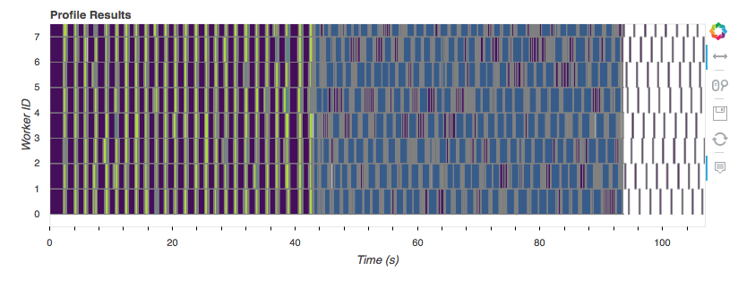
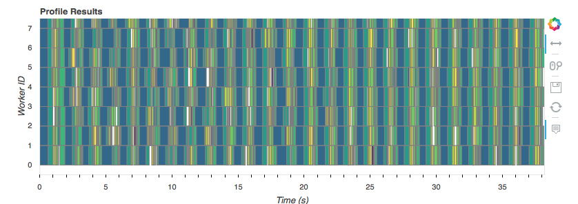

This work is supported by Anaconda, Inc. and the Data Driven Discovery Initiative from the Moore Foundation.
This is part two of my series on scalable machine learning.
You can download a notebook of this post here.
Scikit-learn supports out-of-core learning (fitting a model on a dataset that
doesn't fit in RAM), through it's partial_fit API. See
here.
The basic idea is that, for certain estimators, learning can be done in
batches. The estimator will see a batch, and then incrementally update whatever
it's learning (the coefficients, for example). This
link
has a list of the algorithms that implement partial_fit.
Unfortunately, the partial_fit API doesn't play that nicely with my favorite
part of scikit-learn,
pipelines,
which we discussed at length in part 1. For pipelines to work,
you would essentially need every step in the pipeline to have an out-of-core
parital_fit version, which isn't really feasible; some algorithms just have to
see the entire dataset at once. Setting that aside, it wouldn't be great for a
user, since working with generators of datasets is awkward compared to the
expressivity we get from pandas and NumPy.
Fortunately, we have great data containers for larger than memory arrays and
dataframes: dask.array and dask.dataframe. We can
- Use dask for pre-processing data in an out-of-core manner
- Use scikit-learn to fit the actual model, out-of-core, using the
partial_fitAPI
And with a little bit of work, all of this can be done in a pipeline. The rest of this post shows how.
Big Arrays
If you follow along in the companion notebook, you'll see that I
generate a dataset, replicate it 100 times, and write the results out to disk. I
then read it back in as a pair of dask.dataframes and convert them to a pair
of dask.arrays. I'll skip those details to focus on main goal: using
sklearn.Pipelines on larger-than-memory datasets. Suffice to say, we have a
function read that gives us our big X and y:
X, y = read()
X
dask.array<concatenate, shape=(100000000, 20), dtype=float64, chunksize=(500000, 20)>
y
dask.array<squeeze, shape=(100000000,), dtype=float64, chunksize=(500000,)>
So X is a 100,000,000 x 20 array of floats (I have float64s, you're probably
fine with float32s) that we'll use to predict y. I generated the dataset, so I
know that y is either 0 or 1. We'll be doing classification.
(X.nbytes + y.nbytes) / 10**9
16.8
My laptop has 16 GB of RAM, and the dataset is 16.8 GB. We can't simply read the entire thing into memory. We'll use dask for the preprocessing, and scikit-learn for the fitting. We'll have a small pipeline
- Scale the features by mean and variance
- Fit an SGDClassifier
I've implemented a `daskml.preprocessing.StandardScaler``, using dask, in about 40 lines of code (see here). The scaling will be done completely in parallel and completely out-of-core.
I haven't implemented a custom SGDClassifier, because that'd be much more
than 40 lines of code. Instead, I've put together a small wrapper that will use
scikit-learn's SGDClassifier.partial_fit to fit the model out-of-core (but not
in parallel).
from daskml.preprocessing import StandardScaler
from daskml.linear_model import BigSGDClassifier # The wrapper
from dask.diagnostics import ResourceProfiler, Profiler, ProgressBar
from sklearn.pipeline import make_pipeline
As a user, the API is the same as scikit-learn. Indeed, it is just a regular
sklearn.pipeline.Pipeline.
pipe = make_pipeline(
StandardScaler(),
BigSGDClassifier(classes=[0, 1], max_iter=1000, tol=1e-3, random_state=2),
)
And fitting is identical as well: pipe.fit(X, y). We'll collect some
performance metrics as well, so we can analyze our parallelism.
%%time
rp = ResourceProfiler()
p = Profiler()
with p, rp:
pipe.fit(X, y)
CPU times: user 2min 38s, sys: 1min 44s, total: 4min 22s
Wall time: 1min 47s
And that's it. It's just a regular scikit-learn pipeline, operating on a
larger-than-memory data. pipe has has all the regular methods you would
expect, predict, predict_proba, etc. You can get to the individual
attributes like pipe.steps[1][1].coef_.
One important point to stress here: when we get to the BigSGDClassifier.fit
at the end of the pipeline, everything is done serially. We can see that by
plotting the Profiler we captured up above:

That graph shows the tasks (the rectangles) each worker (a core on my laptop)
executed over time. Workers are along the vertical axis, and time is along the
horizontal. Towards the start, when we're reading off disk, converting to
dask.arrays, and doing the StandardScaler, everything is in parallel. Once
we get to the BigSGDClassifier, which is just a simple wrapper around
sklearn.linear_model.SGDClassifier, we lose all our parallelism*.
The predict step is done entirely in parallel.
with rp, p:
predictions = pipe.predict(X)
predictions.to_dask_dataframe(columns='a').to_parquet('predictions.parq')

That took about 40 seconds, from disk to prediction, and back to disk on 16 GB of data, using all 8 cores of my laptop.
How?
When I had this idea last week, of feeding blocks of dask.array to a
scikit-learn estimator's partial_fit method, I thought it was pretty neat.
Turns out Matt Rocklin already had the idea, and implemented it in dask, two
years ago.
Roughly speaking, the implementation is:
class BigSGDClassifier(SGDClassifier):
...
def fit(self, X, y):
# ... some setup
for xx, yy in by_blocks(X, y):
self.parital_fit(xx, yy)
return self
If you aren't familiar with dask, its arrays are composed of many smaller
NumPy arrays (blocks in the larger dask array). We iterate over the dask arrays
block-wise, and pass them into the estimators parital_fit method. That's exactly
what you would be doing if you were using, say, a generator feed NumPy arrays to
the parital_fit method. Only you can manipulate a dask.array like regular
NumPy array, so things are more convenient.
Some Challenges
For our small pipeline, we had to make two passes over the data. One to fit the
StandardScaler and one to fit the BigSGDClassifier. In general, with
this approach, we'll have to make one pass per stage of the pipeline, which
isn't great. I think this is unavoidable with the current design, but I'm
considering ways around it.
Recap
We've seen a way to use scikit-learn's existing estimators on
larger-than-memory dask arrays by passing the blocks of a dask array to the
partial_fit method. This enables us to use Pipelines on larger-than-memory
datasets.
Let me know what you think. I'm pretty excited about this because it removes
some of the friction around using sckit-learn Pipelines with out-of-core
estimators. In dask-ml, I've implemented similar wrappers for
- SGDRegressor
- PassiveAggressiveClassifier
- PassiveAggressiveRegressor
- Perceptron
- MPLClassifier
- MLPRegressor
- MiniBatchKMeans
I'll be packaging this up in daskml to make it more usable for the
community over the next couple weeks. If this type of work interests you, please
reach out on Twitter or by
email. If you're interested in contributing, I
think a library of basic transformers that operate on NumPy and dask arrays and
pandas and dask DataFrames would be extremely useful. daskml may be a good
home for those, and I could use help in implementing them (I don't think
scikit-learn would be a good home, since they don't (and shouldn't) depend on
dask at this point).
Next time we'll be going back to smaller datasets. We'll see how dask can help us parallelize our work to fit more models in less time.